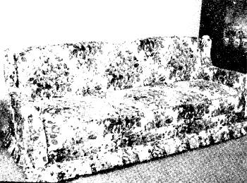
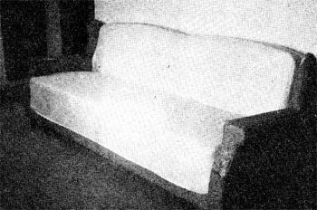
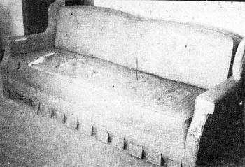

While browsing through our favorite bookstore, my husband and I came across a few early numbers of MOTHER . and bought a copy of each, because the contents spoke to our hidden desire for a truer, more natural way of life. We subscribed, and each issue inspired us to further dreams of a down-to-earth mode of living. Apart from some experiments with sprouting and baking, however, dreaming was as far as we went.
Then NO. 30 arrived, and Virginia Schmitz's article "How to Reupholster Furniture" gave us the incentive to begin on something practical: specifically, the restoration of an Early American davenport (Photo 1) which was solid and in good shape except for the disgracefully threadbare covering. We didn't feel that we could afford either to buy a new piece or to hire the old one redone and we certainly didn't want to dispose of the poor thing, since we sometimes have to use it for an extra bed. So, with 'Virginia's advice as moral support and our ragged couch as stimulus, I set out in search of material.
My first stop was a well-known department store, where I found the selection very limited partly because I wanted a period design, and partly because of the prices. The two possible fabrics I did turn up were marked to sell at $8.00 and $10.00 per yard (a total of $112 or $140 for the 14 yards I needed to reupholster the davenport). A check at other department stores revealed the same conditions.
Then I tried an upholstery and drapery house and discovered tables of good material marked down for various reasons: short lengths, outdated patterns, and manufacturers' imperfections. Among the remnants were two pieces-seven and eight yards respectively-that would have sold for $20.00 a yard if perfect, but which had been reduced to $2.75 because of small flaws. Since there seemed to be plenty of the complete pattern to cover the main parts of the couch, I bought the two lengths ($38.50 plus tax) and, with careful planning, was able to match the design over all sections.
My procedure in re-covering the davenport was one I had learned back East. I chose this method-,which differs somewhat from Virginia Schmitz's-because the old fabric was firm and secure (though threadbare) and I didn't want to remove it.
The first step was to slit the top of the cording and remove the interior. I then bought four yards of muslin (two yards for $1.00 at a discount store) and covered the back and seat of the couch in the following manner: I held the piece of fabric over the portion to be reproduced, pinned around the shape, and cut outside the markers leaving a seam allowance. The sections were pinned together and laid on the davenport as a final check before sewing. (If the old material is greasy, it must be cleaned before the muslin is applied so the oil won't-bleed through.) The finished inner cover was then stapled to the framework. (See Photo 2.)
This preliminary operation gave me the experience I needed to begin on the new upholstery fabric, and also provided a more solid surface by protecting the threadbare areas. The outer cover was made in exactly the same way except that this time around I inserted the cording (either during the sewing process or by tacking where conditions allowed).
Photo 3 shows the finished davenport. Its transformation cost a total of $45.00, including materials, tacks, staples, thread, and cording.
I'm writing in the hope that these few ideas may help someone else. My method isn't as easy as Virginia's (in which the stripped-off pieces of old covering serve as models for the new). It does, however, offer a fairly simple method of fitting and cutting without a pattern and might give others the courage to reupholster a piece when they realize that they don't have to uncover it first.
In closing, I'd also like to mention how happy I am with the whole concept of MOTHER and her very useful and practical articles. With the economy in its present state, I'm sure this magazine will continue to be a most instructive publication. Thanks to MOM and her contributors!.
|
 |
 |
 |